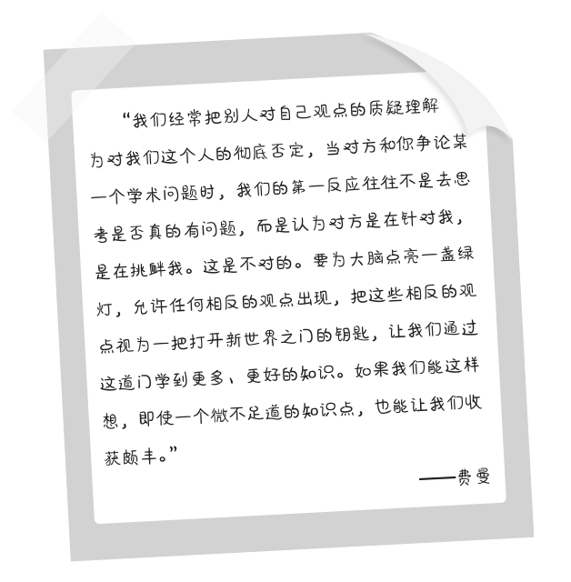

第二十一章
纵向拓展和精进
在费曼看来，一只候鸟为何飞往北方或者飞向南方并不是什么高深莫测的问题，讲述给一位对生物迁徙一窍不通的人士并让他听懂这种现象也不难做到。“困难之处在于，候鸟的迁徙规律其实是复杂的，地球的气候变化，地域生态，鸟类族群的习惯，路线的选择等，这是一门庞杂的知识。”他说，“当你想深入学习这个领域的知识时，真正的难题才刚刚开始，你必须把它当作一个深耕的宝地，而不是一个简单的几句话就能讲完的故事。”
理解新的知识不只是记下基本的原理，而是要将它们纳入现有的知识系统，要充分地掌握内在的规律，成为这门知识的行家里手。像学英语，背上几千个单词只能帮你完成一些初级的对话，却不足以成为英语高手，比如阅读专业的英文著作。这需要一套高效的学习方法，特别是能对知识纵向地拓展和精进。在费曼学习法的简化步骤中，纵向深入知识的内部，是实现对知识深刻理解的必经途径。
大部分时候，学习低效是因为你已经习惯了横向扩展知识和进行增量学习。“横向”和“增量”都是初级学习的标签，只重广度和数量，不重视学习的深度。这种学习会让你获取非常大的知识量，但在学习的质量上却十分低效，从而产生一系列的负面效应：
认为学习很辛苦，花太多的时间，消耗太多的精力；
不知道如何设计学习目标，总是感到迷茫；
学习时缺乏主动性与持久性，有一定的爆发力，但也容易三分钟热度；
学习不得要领，没有奏效的学习方法。
第一，纵向拓展。
解决这些问题的第一个原则是在学习中实现纵向拓展。需要注意的是，我们平时遇到的各种表面上看起来“无用”的不相干的知识，其实在最后都能联系起来，互相是有关系的，也就是知识间的桥梁。这意味着我们并不需要对一个问题横向地掌握它所有的知识点，只需要对其中的一两个点集中突破，深入研究，便能举一反三。
例如，你对唐朝的历史很感兴趣，特别想学通从李渊建唐到唐末的整个唐朝历史，然后你制订了一个计划，列出了时间表，又发现这真是一个漫长的过程，足足两百多年的历史呀！难道像流水账一样全部背诵下来吗？就算唐史专家也不可能在两三年内完成这个计划，何况一个业余的历史爱好者呢？这时，你可以使用纵向拓展的学习方法，简化你要学习的唐朝历史，减少要学习的范围——从“关陇集团对唐朝建立的影响”这个知识点学起，重点研究李家与关陇集团的关系、关陇集团对唐初政局的影响等。沿着这条主线学下去，你会发现它就像一根极具黏力的绳子，使你不仅掌握了唐朝的历史走向，还学到了很多富有深度的知识点。
这就是纵向拓展的好处。同样的策略我们也能应用到别的知识上，比如天文物理，重点研究某个星球的重力、运动特点等，逐渐带出该星系的运行规律、其他星球的特征和相互关系等的知识。
第二，学习要有“绿灯思维”。
费曼推崇的“绿灯思维”是：事无禁止均可为。当我们在学习中遇到新的观点或者不同的意见时，一定要耐心地倾听，懂得自我反省，从中汲取有价值的信息。这使得我们的学习视野是不受局限的，既看得深，又看得广，拥有开放的态度。
和“绿灯思维”相反的是“红灯思维”，什么是“红灯思维”？就是自我中心主义。我们在学习和表达中当感觉到自己的观点、尊严或立场有可能受到别人的挑战时，第一反应不是与对方交换看法、平等沟通，而是充满警惕，加强防卫，关上沟通的大门，拒绝反省。
想拥有“绿灯思维”并不容易，因为大部分人平时都在用“红灯思维”想问题和行事，这包括我、你、他等无数的读者，即便伟大的人物偶尔也不能免俗，也会有以自我为中心的时候。对此，费曼的建议是：在涉及思想或观点的问题时，一定要懂得区分什么是“我”，什么是“我的想法”。两者并不是一回事。

第三，学习要“以慢为快”。
真正的高效学习，一定是把知识融会贯通的结果。想达到这样的目的，就不能心浮气躁，而是习惯“以慢为快”。在越来越快的生活、工作节奏和无处不在的学习焦虑中，做到“慢”并不容易，但这是一个必须完成的任务。“以慢为快”就是专注于一个学习对象，把它学精、学通，有了对其核心知识的深刻理解，我们才能100%地运用它，把它转化为自己的本领。
比如教孩子学骑自行车。怎样才算学会了骑自行车？是骑上顺利地从家到达学校，再从学校返回？不是。如果这么简单，任何一个孩子半天的功夫就能顺利地骑上1000米，可遇到不平整的路面，他还能这么轻松吗？所以不能着急，要慢下来。我们要让他把精力放到掌握车的平衡上，在凹凸不平的道路上反复寻找平衡的感觉，直至能掌握平衡，应付种种紧急的情况，才真正是学会了骑自行车。
但是现实中，很多人追求的却是快餐式学习，像“三分钟学会看财报”“五分钟学会高难度算法”“一小时学会48个音标”等，从技术效率上把学习变成了一种不求甚解、只求“好像已经学会”的快餐行为。对于这种粗制滥造的学习，费曼是坚决反对的。他曾这样讽刺纽约的证券从业者培训班：“我知道有一个地方号称两分钟就能让人学会100种兜售股票的技巧，从那里走出来的证券经纪人，就像驾驶着航天飞机的猴子，我不相信他们能把你成功地送回地球。”
以我自身的经历来看，运用费曼学习法阅读一本书时，仅为了制作不足1000字的书的知识结构图，我就花了三天时间。然后，根据这张结构图，我一边学习具体的内容，一边做笔记。完成前面的几个步骤后，我要对书的内容再一次进行简化，又花了两天的时间，修正了书的知识结构图。正是因为看起来很“慢”，我打通了许多知识阻塞的地方，让我对书的理解上升到了一个更高的高度。
第四，精进需要“刻意练习”。
知识的精进需要“刻意练习”，但“刻意”二字指的并不是“有目的的针对性训练”，而是提升我们的“认知视野”，拓展对知识的“认知深度”。就好比下棋，新手下棋时从棋盘上看到的不过是车、马、炮这些具体的棋子，走一步看一步，高手看到的却是整个棋局的走势和所有可能采取的策略，从而在战略层面做出正确的选择。对同一个问题，新手和高手的认知方式截然不同，最终的结果也就有了天壤之别。
体现在学习中，就是放弃对细枝末节的考据，强化对问题本质和关键领域的研究，通过训练，提高我们的认知视野和认知深度。
第一，重点研究问题的本质。
什么是问题的本质呢？举个简单的例子，你要给自己的公司取名字，但缺乏这方面的知识，于是到网上搜索。互联网给了你一大堆的结果，全是教你怎样给公司取名字的，有产品命名法，有地域命名法，有行业命名法，甚至还有卜卦命名法。于是，你如获至宝，把这些文章挨个阅读，一个接一个地尝试。有效果吗？忙碌好几天下来，没有效果，取的名字你都不满意。
前面我讲到过，这种学习和运用知识的方法是在提升技术效率，而不是认知效率，它解决不了你的主要问题。你该怎样做呢？最好的办法是——考虑自己此次学习的目的，不是要学习取名的方法，而是要为公司取一个满意的名字。这关乎认知的深度。按照这个认知，你再进行尝试，就能看到一条快速通道：看看同行业的公司是怎样命名的，结合自己公司的特点取一个相对合理的名字。这就是从问题的本质出发，规划自己的学习路径，可以少走弯路，迅速达到目的。
第二，大量的持续练习。
《学习之道》（A Mind for Numbers）的作者、美国工程学教授芭芭拉·奥克利（Barbara Oakley）认为，一个人想成为某个领域内的顶尖高手不可能存在什么捷径，唯一的办法就是对于核心技能有着更深刻的理解。
奥克利在学校时数理成绩就非常差，经常垫底，但为了保住自己的工作，她不得不面对大量的数学知识，寻找克服恐惧和提高学习效能的办法。她曾经花了半个多月的时间，把几十本数学专著的上千个问题抄写下来，又花了30天的时间，将这些问题分门别类地整理成十几个PPT，然后反复研究五遍以上。随后，她又把自己的心得讲给数学优秀的同学、同事等，请他们给出意见，直到能轻松自如地阐述这些数学问题。最后，她又再次简化了这些知识，把对工作最重要的部分抽离出来，持续地练习和温习，完全改变了自己的数学能力。
事实上，大量的持续练习贯穿于费曼学习法的全程。要想深入地了解一门知识，精通一个领域，有些工作是无法省略的。现在，我仍然保持着每天阅读两千字的习惯，就是为了保证自己在读书学习时的敏锐度，以及拓展知识深度的能力。
第三，从自己感兴趣的地方入手。
兴趣永远是学习最强大的驱动力，也是保证学习效能的最好用的工具。这一点无需赘述。为了提高学习的效率，挖掘知识的深度，我们可以从自己感兴趣的领域或知识点入手，以点带面，效果往往非常好。
例如，你正在学习演讲，读了很多教授演讲的书籍，费曼的《发现的乐趣》你也读过，潜心研究怎样提高自己的演讲技巧。平时，你经常被一些感人的事迹打动，搜集了大量的好故事。但是，尽管你早已对演讲类的知识倒背如流，也形成了自己的知识框架，实战中却仍然表现笨拙。这时你就要思考一下，很多演讲之所以能够打动听众，是因为演讲的背后有一定的规律可循。
我们的口才不仅源于演讲的技巧，更源于对人性的认知。
组织语言的能力，首先取决于我们对一个问题的关注和兴趣。
要把感情完全投注于演讲之中，以情动人，才能以理服人。
对演讲的技巧有了基本的了解之后，也掌握了语言、肢体表达的技能，更重要的一项工作就是发现那些你特别感兴趣的话题——这些话题如同泄洪的堤坝，一旦打开，就像洪水喷流而出，有说不完的话，讲不完的观点。如果你特别喜欢演讲，想从事这方面的工作，那就要找到和锁定这些兴趣，而非单纯地搜集那些干巴巴的素材。
开发兴趣比背熟原理重要。以兴趣为起点去学习相关的知识，阅读相关的书籍，理解相关的概念，才能让自己以较快的速度成长，真正地学通和学精一门知识，并把它应用于我们的生活和工作中。认识到这一点，会让你对学习的本质有更为精确的认知。